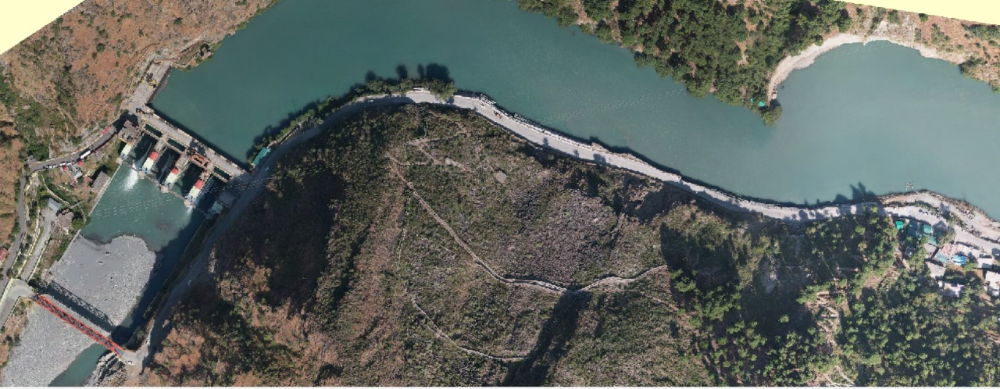
Mapping the future with precision
Geospatial insight and modern surveying for the projects shaping tomorrow.

Geospatial insight and modern surveying for the projects shaping tomorrow.
A modern survey & engineering consultancy organization having expertise in various survey technology and engineering design for various sectors including infrastructure, railways, roads, mining, agriculture, telecom, energy, etc. We are highly professional and one of the most rated and recommended survey and engineering consultancy organizations in India.
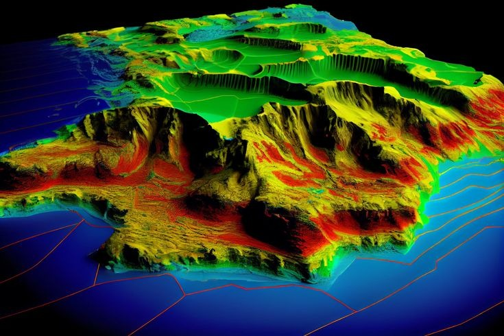
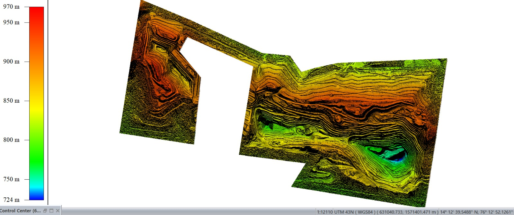
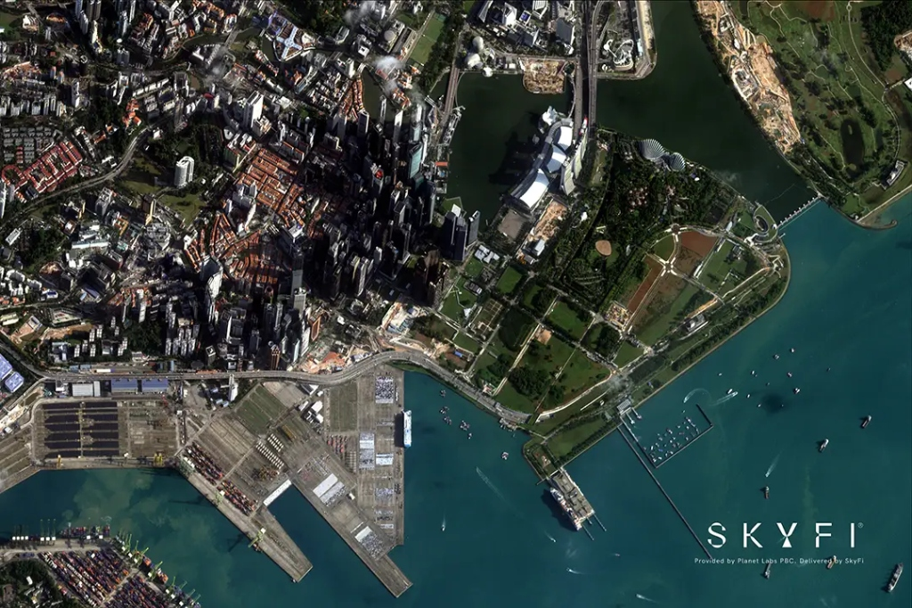
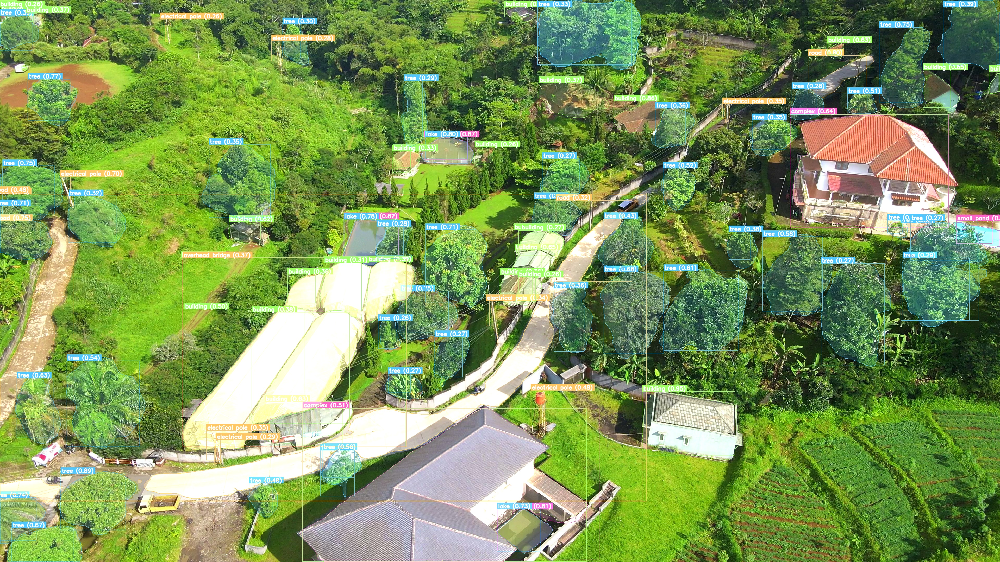
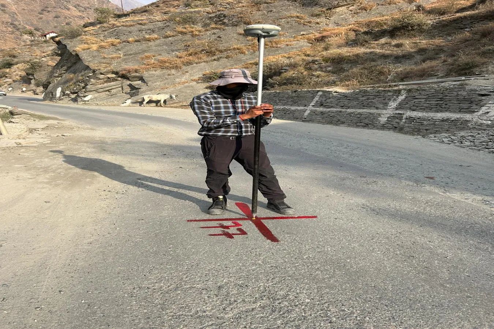
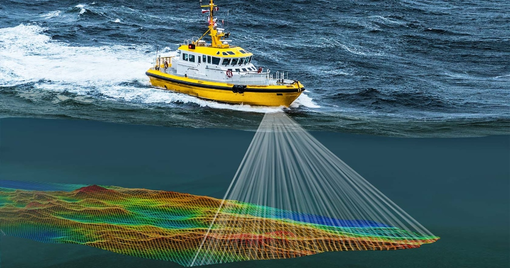
Akshaa reads drone, aerial and satellite imagery, surfaces the objects and changes that matter, and keeps every finding pinned to the frame it came from.
Iris Aerial employs state-of-the-art technology to deliver unparalleled accuracy in data capture, ensuring your enterprise's requirements are met with unmatched precision.
Experience lightning-fast mapping and surveying services from Iris Aerial that outperform traditional methods, saving you time and resources without compromising quality.
Harness the power of advanced drone technology and streamlined processes with Iris Aerial to achieve faster project turnarounds and elevated operational efficiency.
With extensive industry experience, Iris Aerial ensures you get exceptional results tailored to your project's needs, maximizing value without breaking the budget.
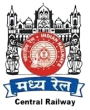
Central Railway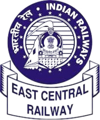
Eastern Railway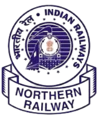
Northern Railway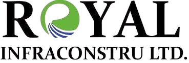
RoyalSend the corridor or boundary, the design stage you are at, and the accuracy you need to hit. We will come back with the control and capture plan to get you there.
Topography, alignment, structures, yards, drainage, and existing assets are captured as one coordinated base for new lines, doubling, and detailed engineering.
Methods: UAV photogrammetry · DGPS/RTK · total station · levelling · GPR
Outputs: Alignment plans · L-sections · cross-sections · ESP/yard plans · orthomosaics
Mountain corridors and long rights of way are mapped with the capture method suited to access, vegetation, relief, and design accuracy.
Methods: RGB UAV · UAV LiDAR · GNSS/IMU · stereo satellite
Outputs: DTM/DSM · contours · orthophoto · profiles · route constraints
Reality capture, feature extraction, and GIS-ready layers help planners read land use, infrastructure, drainage, and change without separating the map from its source.
Best suited to: Master plans · campuses · SEZs · utility and asset inventories
Outputs: Base maps · 3D context · land-use layers · planning exhibits
Repeatable terrain capture supports volume review, pit and dump mapping, slope context, and pre/post activity comparisons.
Methods: UAV mapping · LiDAR · point clouds · surface comparison
Outputs: Volumes · terrain surfaces · contours · change packages
Hydrographic and aerial observations are brought together for reservoirs, channels, dams, watersheds, irrigation, and flood-sensitive landscapes.
Methods: Bathymetry · UAV survey · GNSS control · watershed analysis
Outputs: Depth surfaces · sections · capacity · drainage and catchment maps
We carried out a detailed topographical survey using drone-based photogrammetry for NH 154A. Data acquisition supported feasibility studies and detailed engineering for the rehabilitation and upgradation of the highway.
NH 154A, Chamba · Photogrammetry & ground survey
We carried out a high-resolution Drone LiDAR Survey for the proposed road alignment in Aizawl, Mizoram. The survey covered approximately 50 km with a minimum 200-metre right of way (ROW), extending 100 metres on each side of the centreline, to support feasibility and engineering design.
We executed a detailed aerial and ground-based topographical survey to support EPC (Engineering, Procurement & Construction) work for doubling the railway track between Dhansiri and Naojan stations in Nagaland under Northeast Frontier Railway (NFR). The survey brought corridor mapping and ground measurements into a shared base for railway engineering.
Explore project methods and deliverables in our case study.
Share the corridor or site, design stage, coverage, accuracy expectation, and intended handoff. We will help shape the control and capture plan.
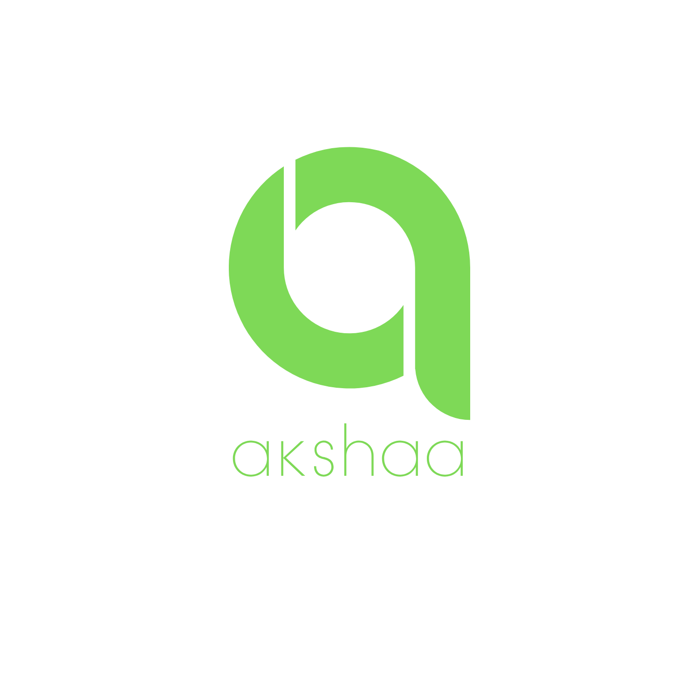
Akshaa brings object detection, change analysis and human review into one place. Work with drone, aerial and satellite imagery while keeping every observation linked to its source.
For planning authorities and project teams who need to see what has been built, what has changed, and where progress stands.
For analysts working repeat captures of the same scene, where the question is what is present now, what has moved, and whether the result holds up to review.
Turn aerial imagery into a clear view of roads, rail, buildings and land change. Compare surveys over time and keep every mapped feature tied to its location and source.
Give project teams a consistent way to inspect what is on the ground and what has changed between captures.
Use georeferenced drone, aerial or satellite captures.
Identify transport, buildings, vegetation and water.
Compare survey dates and export checked GIS layers.
The defence side works the same scene again and again. It locates assets, aligns repeated captures and presents the differences for an authorised analyst to confirm — with the original frame never more than a click away.
Review potential changes in asset position, structures and activity alongside the original imagery. Analysts can inspect each model result before using it.
Task-specific models locate relevant objects across optical scenes and refine broad detections into useful asset classes.
Time-separated captures are aligned so newly observed, absent, static, and changed objects can be reviewed together.
Asset density, proximity, class severity, and change indicators help authorised analysts focus and corroborate findings.
Tell us which imagery you hold and what you need read from it. We will walk you through the workflow on your own data.
We unite cutting-edge aerial sensing with on-ground measurement to capture the details that matter . Every project is powered by the right technology for accurate insights and dependable results.
Every project calls for a different view. We combine these technologies to capture reliable data and turn it into useful engineering information.
LiDAR records the shape and height of a site using laser pulses. It supports corridor surveys and terrain modelling, including sites with vegetation.
We classify the point cloud to separate ground, buildings and vegetation, then prepare terrain models and contours for engineering use.
Photogrammetry turns overlapping photographs into maps and 3D models. It is useful for site documentation, surface measurements and progress surveys.
Image quality, capture geometry and surveyed ground control determine the quality of the result. Additional views help cover features hidden from the first flight.
Satellite imagery provides a wider view of land, infrastructure and environmental change. Repeated captures help compare the same area over time.
We select imagery for its date, resolution and coverage, then combine it with ground control and GIS data for mapping and analysis.
DGPS and electronic total stations establish survey control and measure detailed positions on site. They connect aerial data to a common coordinate system.
Documented control points and independent checks help ensure that maps, models and engineering drawings work together.
Acoustic pulses measure water depth and reveal the shape of the bed, supporting bathymetric surveys of rivers, reservoirs, lakes and other water bodies.
Combined with positioning and water-level observations, sonar measurements help create depth surfaces, profiles and reliable context for water-resource planning.
GIS connects features with their location and project information. AI helps locate assets and flag changes in imagery for review.
Akshaa keeps detections linked to their source images so people can check the results before they move into maps, inventories and reports.
THE IRIS TEAM
From field surveys to final maps, we work side by side—and celebrate the wins along the way.
Meet our peopleFAMILIAR FACES. DIFFERENT SUPERPOWERS.
Meet the people bringing their ideas, expertise and everyday energy to every project.
LIFE, BETWEEN THE DEADLINES
Chai breaks, cricket, Holi and expo trips. The moments that make us a team. Tap a photo for a closer look.
Your next team photo
could be with us.
Fly a site, process the point cloud, train the model, or get a project over the line. If you care about the details and like working across disciplines, there is room for you here.
Open a discipline to read what the work actually involves, then apply. Send your résumé and one project or work sample — we read the sample first.
careers@irisaerial.in ↗Surveying, GIS, remote sensing, photogrammetry and LiDAR.
Survey workflows, GIS, remote sensing, photogrammetry or LiDAR processing. Tell us which tools you use, how you check your work, and whether your strengths are in field operations, processing or both.
Share a mapping sample, project summary or portfolio that explains your contribution and the problem you helped solve.
Computer vision, geospatial data and applied machine learning.
Python, computer vision, geospatial data, data engineering or model deployment. We are interested in careful experiments, reproducible work and your ability to explain where a model succeeds and where it needs review.
Share a repository, research project or case study with the dataset, your approach, evaluation and your individual contribution.
Business development, project coordination and client communication.
Experience in business development, project coordination or client communication. Show how you organise work, prepare proposals and keep a project moving.
Share a project, proposal, campaign or coordination example and explain the responsibility you held and what you learned.
Application for the selected role · tell us about yourself and share a concise resume.